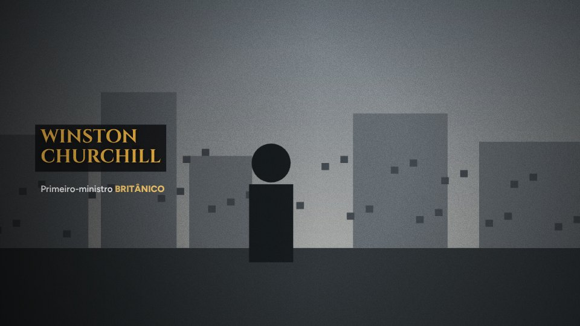
Documentário
Fotos de arquivo, nomes em dourado, capítulos e diagramas.
Cada prédio é um departamento: ideias, roteiro, imagens, narração e edição. Você escolhe o tema, uma equipe em pixel art trabalha ao vivo e o vídeo sai em MP4, pronto pra postar. Sem aparecer e sem saber editar.
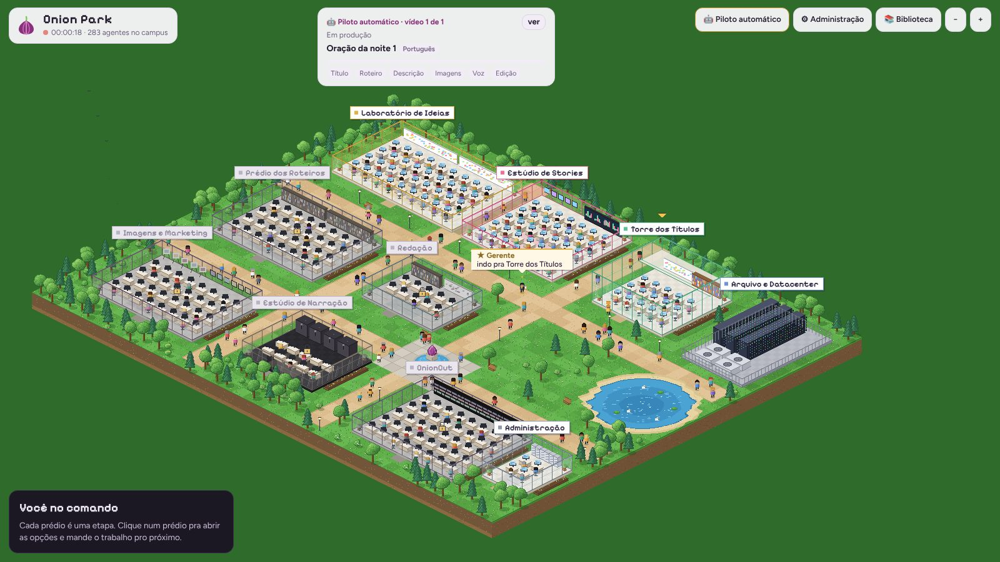
Roteiro num lugar, banco de imagens em outro, gravar a voz, editar a timeline, legendar, exportar… Arraste pra ver a diferença.
Cada departamento faz uma parte. Você aprova, ajusta o que quiser e segue pro próximo. Ou deixa tudo no automático.
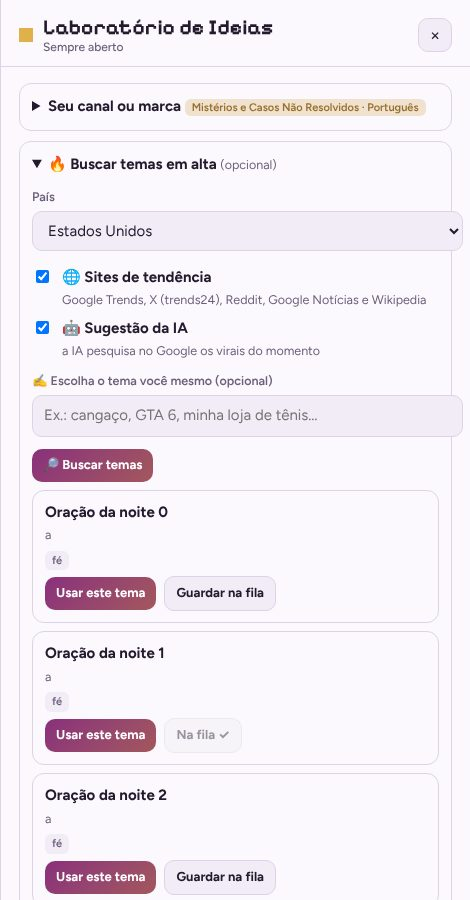
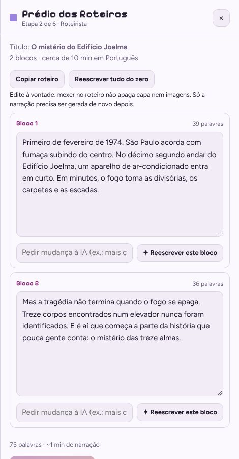
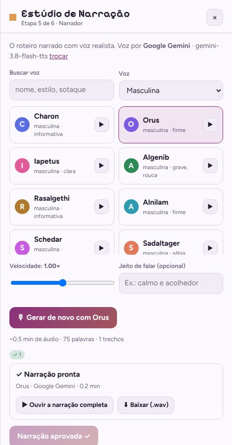
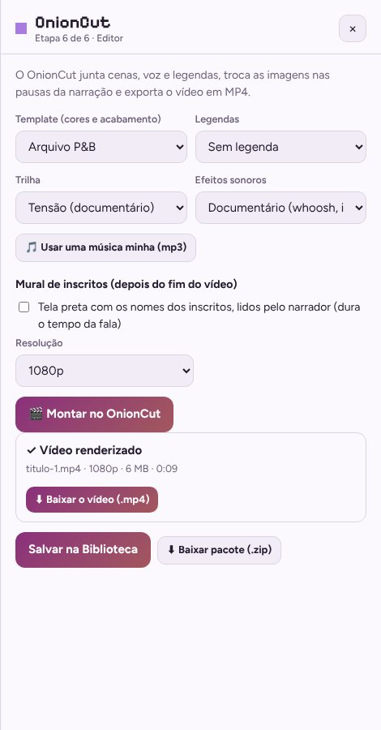
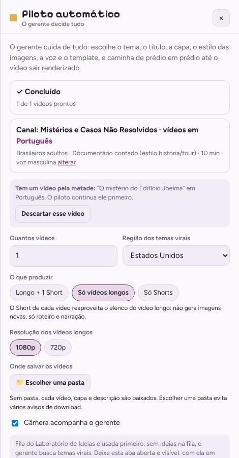
Do documentário com fotos de arquivo ao vídeo de oferta da sua loja. Fotos históricas reais vêm de acervos livres, com créditos automáticos.

Fotos de arquivo, nomes em dourado, capítulos e diagramas.
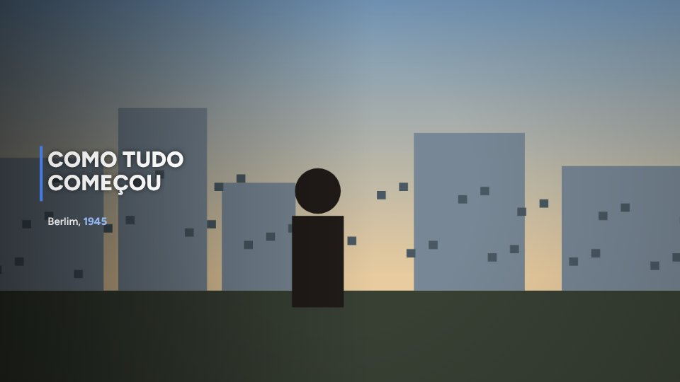
Limpo e atual, com tipografia de revista.
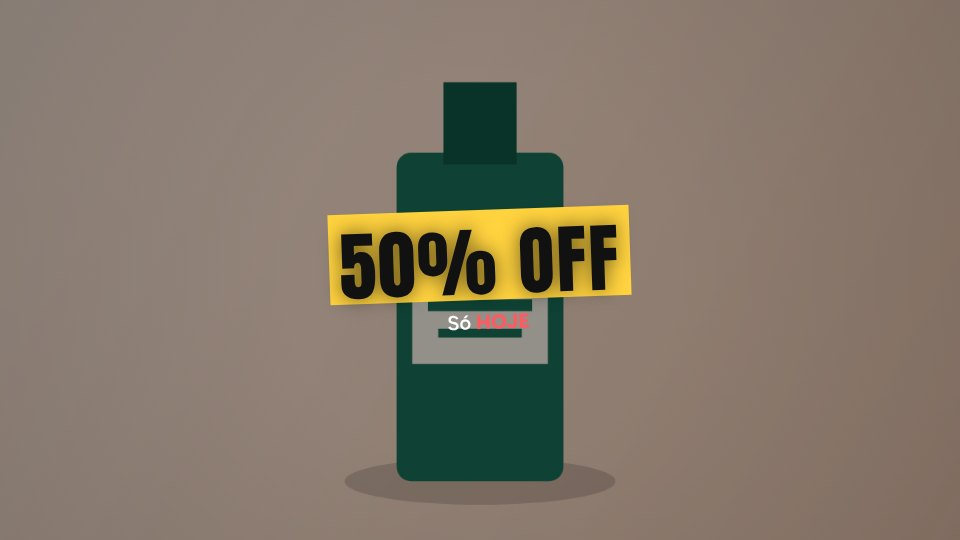
Pra vender: oferta em destaque e chamada pra ação.
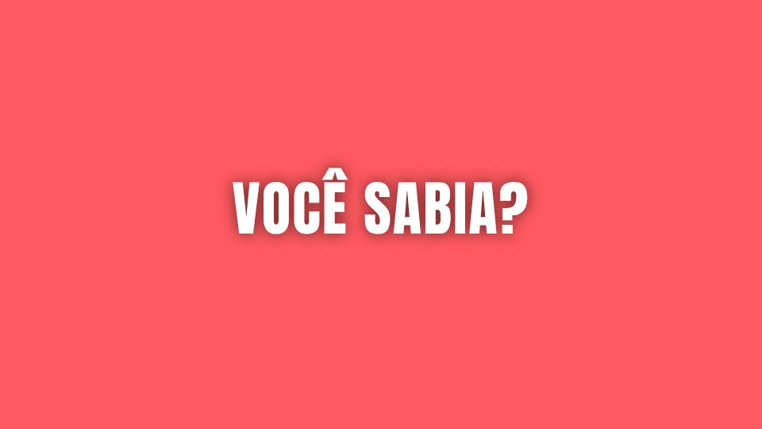
Palavras grandes no ritmo da fala. O mais barato.
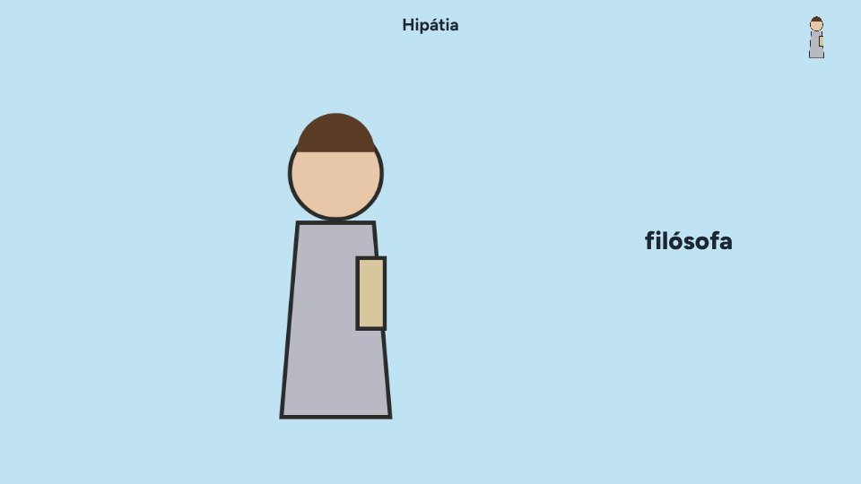
Personagens desenhados entrando na hora certa.
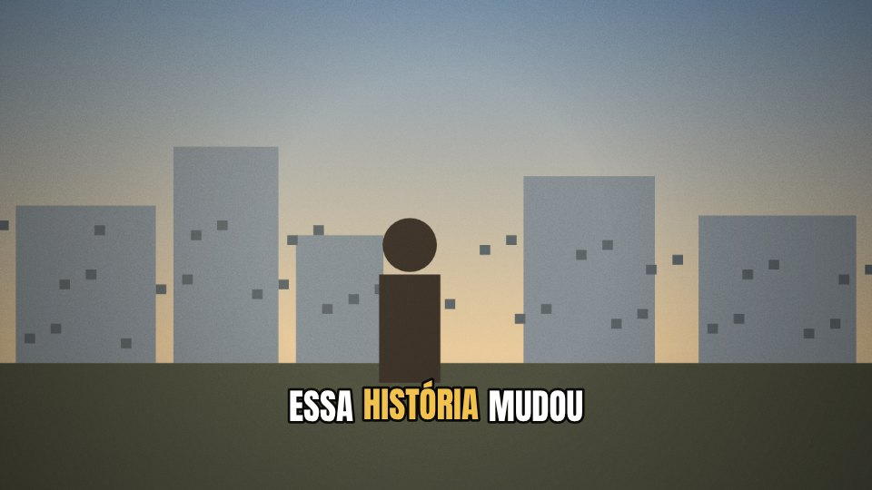
Imagens cinematográficas com legenda animada.
Ele caminha de prédio em prédio e decide cada etapa pensando em views e retenção. Você acompanha ao vivo ou vai tomar um café.
Envie o seu vídeo, as fotos do produto e diga o que quer passar. A IA assiste e o Onion edita: corta as pausas, mostra o produto na hora em que você fala dele e coloca legenda, textos de oferta e trilha.
No final, o narrador agradece os nomes que você colou e convida quem assiste a se inscrever e deixar o nome nos comentários. Mais comentários, mais inscritos, mais alcance.
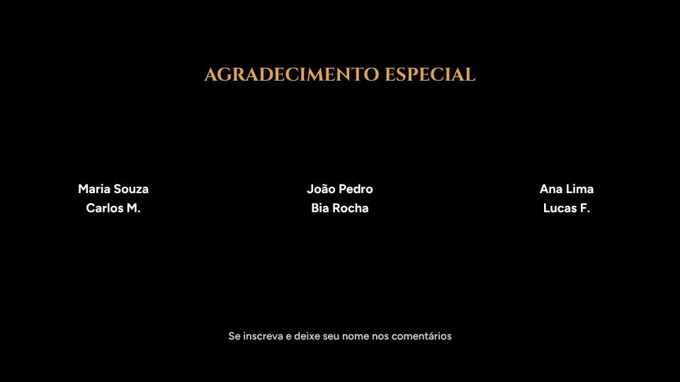
O Onion roda no seu navegador. Roteiros, imagens, narrações e vídeos ficam guardados no seu computador, e as chaves de IA vão direto pro provedor, sem passar por nós.
Cancele quando quiser. As chamadas de IA (Gemini, Claude, OpenAI, ElevenLabs) são cobradas pelo próprio provedor na sua conta: em geral, centavos por vídeo.
Não. Você escolhe o tema e aprova cada etapa, ou liga o piloto automático. O OnionCut faz os cortes, as legendas, a trilha e exporta o MP4.
Sim. O Onion usa a sua chave (a do Gemini já faz roteiro, imagens e narração). Ela fica só no seu navegador, e o custo vai direto pra sua conta no provedor, em geral centavos por vídeo.
Vídeos longos pro YouTube, Shorts, Reels, stories e vídeos promocionais da sua loja ou serviço, em vários idiomas.
Dá pra acompanhar e enviar vídeos da galeria pelo celular, mas a montagem do vídeo funciona melhor no Chrome ou no Edge do computador.
Sim. Ficam no seu navegador e você baixa em MP4 com capa, descrição e roteiro organizados em pastas.
Pode, desde que o conteúdo tenha valor de verdade. O YouTube não paga canais de produção em massa repetitiva, por isso o Onion varia estilos, roteiros e imagens, e deixa você revisar tudo antes de publicar.
Na sua conta, a qualquer momento. O acesso continua até o fim do mês já pago.
Assine, configure seu canal em 2 minutos e veja a equipe trabalhar no primeiro vídeo.
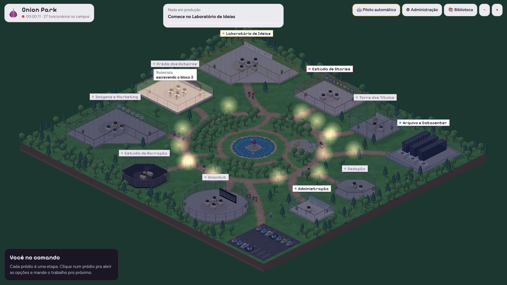